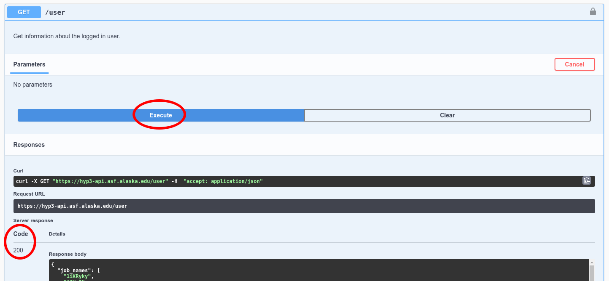
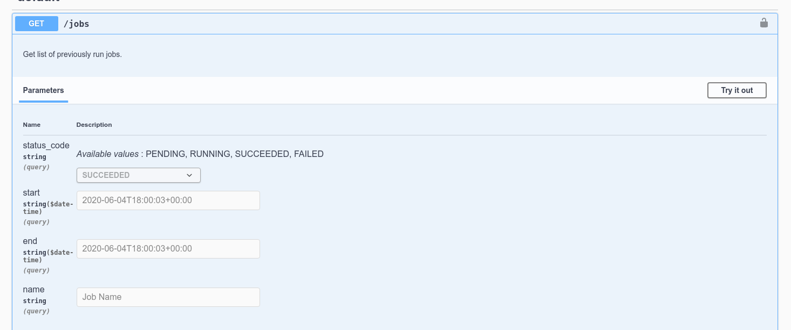

Using the HyP3 API¶
The HyP3 API is built on OpenAPI and Swagger. A friendly interface for exploring the API is available at:
https://hyp3-api.asf.alaska.edu/ui/¶
In order to use the API, you'll need a asf-urs session cookie, which you can get
by signing in to Vertex

Confirm you are authenticated¶
To confirm you are authenticated, you can run a GET request to our /user endpoint.
Select the blue GET button next to /user and click the Try it out button

Then, execute the request and look at the response 
If you get a Code 200 you should see a JSON dictionary of your user information.
Authentication Required
If you get a 401 response back you need to sign in to Vertex to get the asf-urs session cookie.
{
"detail": "No authorization token provided",
"status": 401,
"title": "Unauthorized",
"type": "about:blank"
}
Submitting Sentinel-1 RTC jobs¶
Jobs are submitted through the API by providing a JSON payload with a list of job definitions.
Sentinel-1 jobs are submitted using ESA granule IDs. A minimal job list for a single Sentinel-1 RTC job would look like:
{
"jobs": [
{
"name": "minimal-rtc-example",
"job_type": "RTC_GAMMA",
"job_parameters": {
"granules": [
"S1A_IW_GRDH_1SDV_20210214T154837_20210214T154901_036588_044C54_032E"
]
}
}
]
}
The job list may contain up to 200 job definitions. You can also provide custom RTC options:
{
"jobs": [
{
"name": "custom-rtc-example",
"job_type": "RTC_GAMMA",
"job_parameters": {
"granules": [
"S1B_IW_GRDH_1SDV_20210210T153157_20210210T153222_025546_030B48_2901"
],
"radiometry": "gamma0",
"scale": "power",
"dem_matching": false,
"include_dem": true,
"include_inc_map": true,
"include_scattering_area": false,
"speckle_filter": false
}
},
{
"name": "custom-rtc-example",
"job_type": "RTC_GAMMA",
"job_parameters": {
"granules": [
"S1B_IW_GRDH_1SDV_20210210T153132_20210210T153157_025546_030B48_4E31"
],
"radiometry": "sigma0",
"scale": "amplitude",
"dem_matching": false,
"include_dem": false,
"include_inc_map": false,
"include_scattering_area": true,
"speckle_filter": true
}
}
]
}
Submitting Sentinel-1 InSAR jobs¶
You can also submit InSAR jobs for scene pairs using ESA granule IDs.
{
"jobs": [
{
"name": "minimal-insar-example",
"job_type": "INSAR_GAMMA",
"job_parameters": {
"granules": [
"S1A_IW_SLC__1SDV_20200203T172103_20200203T172122_031091_03929B_3048",
"S1A_IW_SLC__1SDV_20200110T172104_20200110T172123_030741_03864E_A996"
]
}
},
{
"name": "custom-insar-example",
"job_type": "INSAR_GAMMA",
"job_parameters": {
"granules": [
"S1A_IW_SLC__1SDV_20200527T195012_20200527T195028_032755_03CB56_3D96",
"S1A_IW_SLC__1SDV_20200515T195012_20200515T195027_032580_03C609_4EBA"
],
"looks": "10x2",
"include_look_vectors": true,
"include_los_displacement": true
}
}
]
}
Submitting autoRIFT jobs¶
AutoRIFT supports processing Sentinel-1, Sentinel-2, or Landsat-8 Collection 2 pairs.
- Sentinel-1 jobs are submitted using ESA granule IDs
- Sentinel-2 jobs are submitted using ESA granule IDs
- Landsat-8 Collection 2 jobs are submitted using USGS scene IDs
To submit an example set of jobs including all supported missions, you could write a job list like:
{
"jobs": [
{
"name": "autorift-example",
"job_type": "AUTORIFT",
"job_parameters": {
"granules": [
"S1A_IW_SLC__1SSH_20170221T204710_20170221T204737_015387_0193F6_AB07",
"S1B_IW_SLC__1SSH_20170227T204628_20170227T204655_004491_007D11_6654"
]
}
},
{
"name": "autorift-example",
"job_type": "AUTORIFT",
"job_parameters": {
"granules": [
"S2B_MSIL1C_20200612T150759_N0209_R025_T22WEB_20200612T184700",
"S2A_MSIL1C_20200627T150921_N0209_R025_T22WEB_20200627T170912"
]
}
},
{
"name": "autorift-example",
"job_type": "AUTORIFT",
"job_parameters": {
"granules": [
"LC08_L1TP_009011_20200703_20200913_02_T1",
"LC08_L1TP_009011_20200820_20200905_02_T1"
]
}
}
]
}
With your JSON jobs definition, you can POST to the /jobs endpoint to
submit the jobs.
- click the green
POSTbutton next to/jobs - click
Try it outon the right - paste your jobs definition into the
Request body - click
execute

If your jobs were submitted successfully you should see a Code 200 and a
JSON response of your job list, with some additional job attributes filled in.
Querying jobs¶
You can GET job information from the /jobs endpoint. You may provide query
parameters to filter which jobs are returned:

For our above examples, you can get the RTC job that was submitted with the default options by
searching for name=minimal-rtc-example. If you provide no query parameters, you'll get a
JSON response with a jobs list for every job you've submitted.
Within the jobs list, a complete job dictionary will look like:
{
"jobs": [
{
"name": "minimal-rtc-example",
"job_type": "RTC_GAMMA",
"job_parameters": {
"granules": [
"S1A_IW_SLC__1SSV_20150621T120220_20150621T120232_006471_008934_72D8"
]
},
"job_id": "20c377be-2511-46a8-b908-e015abd3c24e",
"user_id": "MY_EDL_USERNAME",
"status_code": "SUCCEEDED",
"request_time": "2021-02-24T21:30:45+00:00",
"expiration_time": "2021-03-11T00:00:00+00:00",
"files": [
{
"filename": "S1A_IW_20150621T120220_SVP_RTC30_G_gpuned_0AEA.zip",
"s3": {
"bucket": "hyp3-contentbucket-fo259f6r6dn6",
"key": "20c377be-2511-46a8-b908-e015abd3c24e/S1A_IW_20150621T120220_SVP_RTC30_G_gpuned_0AEA.zip"
},
"size": 28676279,
"url": "https://hyp3-contentbucket-fo259f6r6dn6.s3.us-west-2.amazonaws.com/20c377be-2511-46a8-b908-e015abd3c24e/S1A_IW_20150621T120220_SVP_RTC30_G_gpuned_0AEA.zip"
}
],
"browse_images": [
"https://hyp3-contentbucket-fo259f6r6dn6.s3.us-west-2.amazonaws.com/20c377be-2511-46a8-b908-e015abd3c24e/S1A_IW_20150621T120220_SVP_RTC30_G_gpuned_0AEA.png"
],
"thumbnail_images": [
"https://hyp3-contentbucket-fo259f6r6dn6.s3.us-west-2.amazonaws.com/20c377be-2511-46a8-b908-e015abd3c24e/S1A_IW_20150621T120220_SVP_RTC30_G_gpuned_0AEA_thumb.png"
],
"logs": [
"https://hyp3-contentbucket-fo259f6r6dn6.s3.us-west-2.amazonaws.com/20c377be-2511-46a8-b908-e015abd3c24e/20c377be-2511-46a8-b908-e015abd3c24e.log"
]
}
]
}
Importantly, the files block provides download links for the product files.
For large queries results may be truncated. In this case there will be a next key in the response that will contain a URL to continue the query (this response may be similarly truncated and include a next key).
{
"jobs": [
...
],
"next": "https://hyp3-api.asf.alaska.edu/jobs?start_token=eyJqb2JfaWQiOiAiYzk1MDUzY2ItYWQzNy00ZGFhLTgxZDItYzA0YmQ4NWZiNDhiIiwgInVzZXJfaWQiOiAiamxyaW5lMiIsICJyZXF1ZXN0X3RpbWUiOiAiMjAyMC0xMC0yOVQxOTo0Mzo0NCswMDowMCJ9"
}